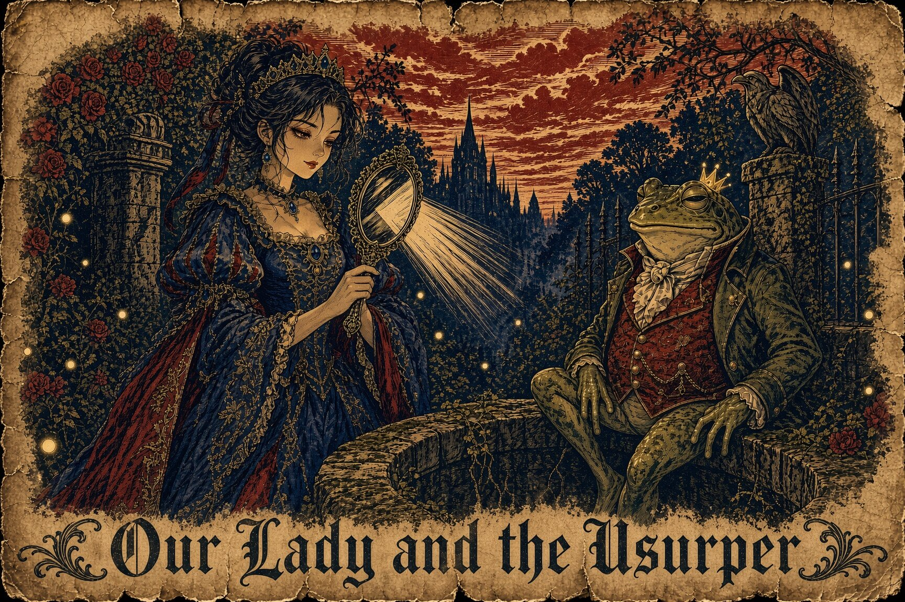

There once was a gentle queen who loved her husband, the king, more than all the glass towers of Glassvale. She was kind to the servants, and she gave bread to the poor at the gate with her own soft hands, and when she walked in the garden the birds came down to sit on her shoulders.
On their wedding day the king had given her a little silver hand mirror, and she carried it with her everywhere. One evening, as she sat by the old well in the garden admiring it, it slipped from her fingers and fell into the dark water. She knelt at the edge and wept.
"Why do you cry, Your Majesty?" said a voice. A frog sat on the rim of the well, wet and green and blinking his golden eyes at her.
"I have lost the mirror my husband gave me," said the queen.
"I will fetch it for you," said the frog, "if you promise to be my friend, and let me eat from your plate, and sit beside you at the table."
What could a gentle woman do? She could not bear to be unkind, not even to a frog. So she promised. The frog dove down and came back up with the mirror in his mouth, and she thanked him, and she kept her word, as a queen must.
The frog ate from her golden plate, and when it was empty he asked for the king's. He sat beside her at the table, and before long he wanted the king's chair. He took, and took, and the queen gave, and gave, because it is a woman's nature to give.
The king found all of this very strange. "My love," he said, "why do you let that creature have whatever he likes?"
The queen patted his hand. "Don't worry, darling," she said. "I have it all under control."
Then the frog asked for one thing more. "Lend me your mirror," he said, "only for one night. I should like to see myself as you see me."
The poor queen could not refuse him. That night, while the king slept, the frog crept into the royal chamber and held the silver mirror over the king's face. The mirror drank up the king's face like water, and his name along with it, and the frog pressed the glass to his own cold cheek and took them both for himself.
In the morning, the man who sat on the throne had the king's face and the king's voice and the king's name. The true king had been cast out into the world with no face anyone knew and no name anyone remembered, so that not even his own wife could recognize him.
The false king never blinked. He would sit very still for hours at a time while his throat swelled and sank, swelled and sank. At supper, when a fly landed near his goblet, his tongue flicked out so fast that nobody was quite certain they had seen it.
In those days there was a mad beggar at the palace gate who shouted that the king was not the king. The guards drove him off with sticks. No one knew where he had come from, and afterward no one ever saw him again.
When the queen at last understood what had happened, she went trembling to the false king and begged him to give back what he had taken. The frog only laughed. He seized her with his cold wet hands and threw her into the deepest dungeon, and the mirror he hid away, back down in the well where he kept all of his stolen things.
Now in the castle there was a brave little squire, fourteen years old, with hair like a burning brand. The beggar's words had troubled him, and so he crept down into the dungeons with a candle to ask the only one who would know.
Through the bars, the queen confessed the terrible truth. "The king is a frog," she whispered, "and the frog is the king. Ride for the neighboring kingdom, and tell the King there of our plight. Take this." And from her finger she drew a signet ring, the king's own seal, which she had kept hidden from the frog all that time. "Show it to him, and he will know you speak for the crown."
The squire stole a horse and rode out by night. The false king's riders came after him with torches and hounds. He hid in a ditch while they thundered past, and swam the river with the ring clenched in his teeth, and lost his horse in the marshes, and ran the last miles on his own two feet. When he reached the gates of the neighboring kingdom, the guards laughed at a muddy boy who claimed to carry a message for a king. But the squire held up the ring, and the laughing stopped.
The neighboring king, King Richard of Nottingham, was busy planning a grand campaign far away when the squire was brought into his war room. The situation was explained to him, and the king was delighted. Here was a chance to practice his stratagems before the real campaign began! So he called his knights together, and they rode for Glassvale that very day.
They stormed the castle by night, took the guards by surprise, and held the gatehouse. Then they fought their way down to the dungeons.
They found the queen waiting for them, composed and dry-eyed, her hair already pinned up as if she had known exactly when they would come.
"First," she said, "take me to the well."
The knights did not understand, but they obeyed. In the moonlit garden the queen knelt at the edge of the well and pushed her soft white arm down into the black water, all the way up to the shoulder, though she was terribly afraid of what might be down there. After a long moment, she drew up the silver mirror.
Then she asked the knights to escort her to the throne room.
The false king sat on his throne with the royal guard all around him, for the guards were loyal to the face they knew. But the queen walked straight up the length of the hall, right through the battle, and held up the mirror.
"Look," she said, "and see what you are."
The frog looked. He saw his own reflection, wet and green and blinking his golden eyes. The stolen face slid off of him like water off a leaf, and he shrank, and shrank, until there was nothing left on the throne but a small brown frog in a crown much too big for him.
The guards lowered their swords. The battle stopped mid-swing.
The queen stepped up to the frog to strike the killing blow. Everyone waited for her to crush the treacherous creature, even the frog. She lifted her foot. Then she set it gently down again.
"I cannot," she said softly. "He is such a little thing. And he has no power now."
The frog hopped down from the throne, across the floor and out the door into the night, and he went back to the bog he had come from.
That very hour the king came home, with his own face and his own name, and the queen ran to him across the throne room and threw her arms around his neck. All the court wept to see it.
So remember, children: a face can be stolen, and a name, and even a crown. But a true heart cannot be stolen. And a true heart always knows its own.